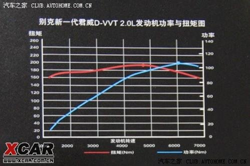
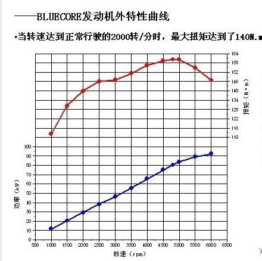
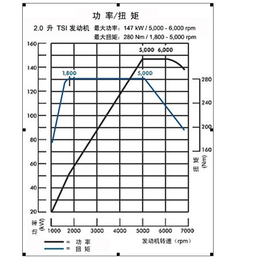

| 发动机功率、扭矩曲线图 | 油门控制车速 | 马力是金 | 排量和扭矩、功率的关系及公式 |
| 线速度、角速度与转速 | 汽车驱动力 | 转速增加，扭矩下降区间 |
发动机特性曲线
我们通常说的发动机功率、扭矩曲线是指将发动机功率、转矩与发动机曲轴转速之间的函数关系以曲线表示，此曲线称为发动机转速特性曲线或简称为发动机特性曲线；如果发动机节气门全开（柴油机高压油泵在最大供油量位置），此特性曲线称为发动机外特性曲线，这也是通常厂商展示的曲线；如果节气门部分开启（或部分供油），称为发动机部分负荷特性曲线。
不同的发动机扭矩曲线会有所差别，通常自然吸气发动机会有低-高-低的曲线，而涡轮增压发动机会有一个相对恒定扭矩的转速区间，这就是常说的扭矩平台。
发动机曲线(扭矩_功率_转速)
BLUE CORE平台、长安逸动1.6L自然吸气发动机工况图（发动机代号JL478QEA）
横坐标是发动机转速，纵坐标蓝色曲线是功率曲线，红色曲线是扭矩曲线。
1500转时发动机扭矩只达到最大扭矩的80%，可以偶尔勉强使用，但是发动机略有吃力；2000转时，扭矩接近最大扭矩的90%，发动机运转转动系统处于较佳状态，运转比较舒服，是日常驾驶的临界点；5000转的最大扭矩，没有实际使用的意义。
因此，建议您日常驾驶要保持在2000—2500转左右。
另外由于升档时，发动机转速有800转左右的降速，因此，升档前，转速要提高到2800—3000转，保证换挡后转速不低于2000转。
当然，您也可以保持1500转以下的转速，它的危害性，请您参照“拖档”的危害。
上海大众斯柯达昊锐1.8TSI发动机功率、扭矩曲线图

昊锐搭载的1.8TSI 发动机是大众汽车集团首次向中国引进全球同步生产的技术领先的发动机产品，该发动机转速达到4500rpm时，即可输出118kW的最大功率，并且这一最大功率输出可维持到发动机转速6200rpm；而250Nm的最大扭矩在发动机转速为1500rpm时即可产生，并可持续输出至发动机转速达到4500rpm，起步、加速性能极为强劲。而昊锐所搭载的2.0TSI发动机动力性能更为出色，在转速达到5100rpm时可以输出147kw的最大功率，在1700rpm时可以产生280Nm的最大扭矩，追求驾驶激情的车主可以尽情地享受操控快感。与此同时，这两款发动机油耗表现相当优异，数据显示，昊锐1.8TSI和2.0TSI 90km/h等速油耗仅为6.1L/百公里，而来自广大车主的亲身体验显示，在典型城市路况，昊锐1.8TSI、2.0TSI百公里综合油耗也基本都在9L以内。
油门控制车速
我们平时开车是用油门控制转速，发动机在这个转速下产生的扭矩通过变速箱克服行车的阻力带动车辆前进。现在我们来看两种情况：
1、在怠速时你轻踩油门转速会急剧上升，是因为你给的油产生功率，此时阻力（扭矩）很小，根据公式功率＝扭矩*转速，转速会急剧上升，你给的油变成了转速。
2、在上坡时你使劲踩油门车速提升的也很慢，是因为你给的油产生功率，此时行车阻力（扭矩）很大，根据公式功率＝扭矩*转速，转速缓慢上升，所以车速上不来。你给的油变成了扭矩。
所以当车速保持在40公里/小时在3、4、5档转速分别为2000、1500、1000转。此时车辆的行驶阻力相同，也就是需要的扭矩相同。根据公式功率＝扭矩*转速可知扭矩不变，转速增加，功率也就增加，也就是油门给的更大。所以尽管2000转燃油利用率更高，但给的油也多，所以高档低转更省油。但是档位越高扭矩越小，如果扭矩小于阻力就会拖档。
马力是金
一、汽油发动机的扭矩象征其汽缸一口气所能吸进的油气量，有如我们人体的肺活量，这个吸气量是会随油门的加大和发动机转速的逐渐升高而增加的，但是它不会一直变大上去，到了某一个转速它会达到巅峰，这就是平时人们所说的最大扭矩值。等发动机的转速再上升，它就会逐渐下降，这是汽油发动机等内燃机在扭矩上的特色，也是最不理想的地方。汽油车必须发动才有扭矩，必须挂上一档，而且还要具备离合器或自排的扭矩变换器才能使发动机有足够的扭矩来使车子起步。如果油门加得不够，车还没动，离合器松的太快，车子会跳起来，然后熄火，这就是发动机在低速扭矩不足的结果。
二、发动机扭矩在低速不足的缺点，可以通过手动档的变速箱齿轮组或是自动档的扭矩变换器及行星齿轮组的操控来做变化及增大。现代车的手动档普遍已有五个前进档，而自动档也大都具备四个前进档。有这么多的档，设计的目的就是要驾驶者随车况、路况进行加减档。不要吝啬换档，如果总是让发动机受折磨，让它处在扭矩不足、欲振乏力的状态下，那么要发动机长久正常工作就难了。
三、马力等于扭矩乘上转速，它象征在单位时间内发动机可吸进多少口的油气量，所以，当油门加大，发动机转速逐渐上升到最大扭矩点时，虽然一口吸气量已达峰值，但由于转速还在增加，也就是吸气的次数还在增加，因此马力仍可上升，一直到最大马力点为止。
四、产生最大扭矩的发动机转速是一个选车的重要参考数据。如果你的车经常在城市行驶，或是经常涉水越野，那么，最好选用在低速（例如每分钟3000转左右）就能发挥出最大扭矩的发动机。如果你是喜欢开快车、飞车的人，那么，最好选用高转速产生高扭矩的发动机（例如在每分钟5000、6000转以上产生最大扭矩）。
五、车子加速快者其最高车速不见得可以很高。如摩托车就是一个明显的例子，在十字路口起步，往往就把汽车抛在脑后，但随着车速增高，它就不行了，会逐渐被汽车追上。扭矩好比百米赛跑选手在起跑点蹲撑、蓄势待发，准备冲向前那一刹那的冲劲；而马力就是维持这股冲劲可以愈跑愈快，一直跑到终点的能力。冲得快，能抢先的选手（扭矩大者）如果没有源源不断的马力支持也是会被其它马力大者赶上而输掉比赛。所以想选择加速力强、又急速很高的车子是不能光看扭矩资料、只挑选配置大扭矩发动机的汽车，最重要的还是要看马力对转速的曲线图，要选马力曲线又高又广者（即马力曲线下的面积大者），起码要看最大马力发生在多高的转速，而且与最大扭矩转速的间隔有多大，也就是有多少油门的空间你可以用来源源不断的加速。当然，车子加速性能的好坏和最高车速可以跑到多快，还得看变速箱、轮胎的匹配和车身的设计。
排量和扭矩、功率的关系及公式
众所周知，汽车之所以能运行是因为它装有发动机。而我们在买车时，往往第一个关注的是这辆车装备了怎样的动力装置。平时我们所知的衡量一台发动机动力水平的参数主要是排量、功率和扭矩，比如雪佛兰科帕奇装备的2.4升发动机最大功率100千瓦（约136马力），最大扭矩220牛米，而雪佛兰科鲁兹装备的1.8升发动机最大功率达到105千瓦（约143马力），最大扭矩177牛米。
把这两台发动机摆在一起会发现一台2.4升发动机怎么还没有一台1.8升发动机的功率大呢？这就是今天我们要说的关于排量、功率和扭矩的问题，有些读者可能已经对三者关系很清楚了，那就当复习一下吧。
普通汽车发动机以四个冲程为一个循环，此技术是由德国科学家尼古拉斯·奥托于1876年发明的，所以又叫奥托循环。一个奥托循环分为四个步骤：进气、压缩、做工、排气。这个问题我就不再详述，各位看动画就明白了。

通过这一巧妙的设计，一部分热能被转化为机械能，驱动车辆，这就是我们平时所说的“动力”，那么要扭矩和功率做什么用呢？
● 扭矩
什么是扭矩？扭矩是怎样产生的？百度百科里写道：“扭矩在物理学中就是力矩的大小，等于力和力臂的乘积，国际单位是牛米Nm...”。好了，我们知道了扭矩通俗点、不那么严谨点说就是力。有力才能推动车辆前进。
为了更好的说明这个问题，我举个简单的例子：在换轮胎的时候如果我们想把车轮上的螺丝拧下来，只靠手的力量一般人是不可能做到的，解决办法就是用脚去踩扳手。其实这是个很简单的道理，无非就是初中学过的力和力臂的关系，这样的例子很多，总而言之，如果施加的力不变，想增加力矩，唯一的办法就是增长力臂。
『汽车方向盘就是典型的通过增加力臂而增大转矩的例子』
{kind=link}
在活塞发动机中，活塞做往复运动，曲轴做旋转运动，他们之间由连杆相连。在做工冲程我们可以发现，其实可以把连杆和曲轴的连接轴中心到曲轴旋转中心的距离看做是力臂，这样以来就很容易理解扭矩是怎样产生的了，跟我们平时拧螺母是一个原理。气缸做工向下运动就是力，力经过连杆施加到曲轴上，驱动曲轴旋转，也就成了我们所说的扭矩。
● 功率：
在我们汽车之家的术语库里功率是这样解释的：“功率是指物体在单位时间内所做的功。功率越大转速越高，汽车的最高速度也越高,常用最大功率来描述汽车的动力性能。最大功率一般用公制马力(PS)或千瓦(kW)来表示，1PS等于0.735kW。”
物理中我们学过公式：W=F·s，它告诉我们做工需要具备两个条件，一是有力，二是沿着力的方向发生位移。而功率是单位时间内做的功，P=W/t，也就是说P=F·s/t，而s/t就是速度，所以这样看来，如果力相同的情况下，想得到更大的功率关键在速度。
● 扭矩和功率的关系
通过P=F·s/t这个公式我们已经能够得出扭矩和功率的关系了，这个公式中的F就是力，简单说就是扭矩，s/t可理解为转速，所以功率就是扭矩和转速的乘积。
功率与扭矩的换算公式
功率与扭矩之间有着相当紧密的联系，功率的具体数值也是由扭矩得来的。让我们回到中学时期，一起来进行公式的推到。
1）W=F·s做工需要具备两个条件，力以及沿着力的方向发生位移。
2）P=W/t功率是单位时间内做的功。
3）将公式1代入2中得到：P=F·s/t，P就是功率，F就是作用力、也就是扭矩，s/t是线速度。
线速度在圆周运动中，其运行一周的距离为一个圆周，即2πR;角速度是指单位时间内转过的角度，其运行一周的角度为2π；所以两者的关系是：线速度v=角速度j*R；
所以P=F*v;→P=F*ω*R;
因为扭矩(N·m)=F*R→P=扭矩(N·m)*ω
因为转速的单位是每分多少圈，而功率的时间单位是秒，所以每秒转速为：转速(rpm)/60;所以当1秒转过了"转速(rpm)/60",其运行的角度为转速(rpm)/60*2π；由此得出以下的公式：
角速度与转速的关系ω＝2 π n /60 (此处频率与转速意义相同)
功率(W)﹦扭矩(N·m)×转速(rpm)×2π/60，
简化计算后成为：功率(kW)=扭矩(N·m) ×转速(rpm)/9549。
(引擎转速rpm就是每分钟所作的功，但功率P的单位是N-m/sec ，所以需除以60，转换成每秒所作的功。)
● 排量和扭矩、功率的关系
然后我们说排量和扭矩功率的关系。排量就是气缸容积，气缸容积越大也就意味着能吸入更多的油气混合汽，做工时的爆炸能量就更强，曲轴输出的扭矩也就越大。
缸径是气缸的直径，行程（也就是冲程）是活塞运动行程上止点和下止点的距离。
举个例子：
一个汽车发动机，缸径80毫米，行程90毫米，四缸的。那么排量这么算：
一个汽缸排量：
402*3.14*90=452160mm3=0.45升(dm3)，发动机总排量=0.45*4=1.8L
显而易见，同样排量的发动机，缸径和冲程可能会有所不同，比如上面这个例子，行程距离明显大于气缸直径，也有一些发动机的直径大于冲程，而最终的气缸容积可能相同，那么不同的缸径和冲程意味着什么呢？
事实证明，行程相对较短的发动机注重高转速、大马力，而长行程发动机能输出更大扭矩。我们可以想象一下，冲程越大，活塞的位移量就越大，连杆的运动幅度同样增大，如果我们把曲轴旋转中心看做圆心，那么显然长行程发动机所画出的圆要比短行程发动机更大，也就是说这个圆的半径要更大。之前我们已经说过了，可以把连杆和曲轴的连接轴中心点到曲轴旋转中心的距离看做是力臂，所以长行程发动机的力臂更长，输出的扭矩自然更强了。
{kind=link}
然而，同样是曲轴旋转一周，长冲程发动机活塞往复运动的距离比短行程发动机活塞更远，因此相对于短冲程发动机来说长冲程发动机的转速偏慢，转速慢就意味着功率相对偏低。在这方面短行程发动机有更大的优势，因为它的转速相对更高，活塞位移的速度更快，单位时间内能做更多的功。
回到文章开头的问题。相比之下，科鲁兹的1.8L发动机能够在6200转/分钟时输出105千瓦（约143马力）的最大功率，而科帕奇的2.4L发动机最大功率转速只有5000转，输出功率自然不会很高。当然，大排量发动机的扭矩优势是小排量发动机无法实现的（除非采用增压技术）。
关于发动机的扭矩和功率，很多人得出这样的结论：日常驾驶中还是大扭矩更实用，因为扭矩大代表加速快，而最大功率只在最高转速输出，平时很少会用到。其实仔细想想，大扭矩也不一定是经常能用到，除非你经常全油门起步。所以说判断一辆车的动力是否够用，最简单的方法还是要亲自试驾一下，仅看参数是不行的。（文/汽车之家 罗浩）
是什么决定引擎的扭力和马力，缸径与行程对马力有什么影响。
首先谈谈马力。我们知道，马力表示的是功率，也就是单位时间内做功的多少。如果用N表示功率，N=W/t，其中W是功，t是时间。而功可以用力与位移的乘积来表示。就是我们熟悉的物理公式：W=FScosa 其中F表示力，S表示位移，而a是力的方向与位移方向之间的夹角。在研究汽车发动机活塞做功时，主要讨论F和S对W的影响。
在发动机中，F是与活塞面积和气缸内压强相关的。F=PA，P是气缸内的压强，燃料燃烧产生的压强越大，F就越大；A是活塞顶的面积，我们都知道计算圆面积的公式：A=3.14159D2（其中D是缸径）。因此，缸径越大，A就越大，从而F就越大。
而S是活塞的行程，也就是活塞往复运动的位移，等于从上止点运动到下止点所经过的距离。S越大，W就越大。
功率是单位时间内做功的多少，所以还要考虑做功的快慢。同样缸径和行程的发动机，如果转速不同，马力也是不同的。转速快的马力大。
就是说，衡量发动机马力的主要因素有四个、气缸压强P、活塞截面积A、活塞行程S和气缸数量n;
乘积AS是一个缸的排量，如果发动机有n个相同的气缸，它的排量就是nAS。
扭矩表示使物体加速转动的能力。一般来讲，汽车发动机的马力大通常扭矩也大。如果用扭矩来表示功率，可以写成公式：N=Mw，M是扭矩，w是转动的角速度。也就是说，刚才我们说扭矩大马力也大的前提是转速相同。如果在马力相同的情况下，扭矩与转速就成反比，转速高的发动机扭矩就会比较小。?
举个通俗的例子，比如，像人的身体在运动时一样，功率就像是身体的耐久度，而扭矩是身体的爆发力。对于家用轿车而言，扭矩越大加速性越好；对于越野车，扭矩越大其爬坡度越大；对于货车而言，扭矩越大车拉的重量越大。在排量相同的情况下，扭矩越大说明发动机越好。在开车的时候就会感觉车子随心所欲，想加速就可加速，“推背感”很好。现在评价一款车有一个重要数据，就是该车在0－100公里／小时的加速时间。而这个加速时间就取决于汽车发动机的扭矩。
一般来讲，扭矩的最高指数在汽车2000－4000／分的转速下能够达到，就说明这款车的发动机工艺较好，力量也好。有些汽车在5000／分的转速左右才达到该车扭矩的最高指数，这说明“力量”就不是此车所长。
8代Civic1.8的扭矩为173.5Nm@4300rpm，表示引擎在4300转/分时的输出扭矩为173.5Nm，那173.5N的力量怎么能使1吨多的汽车跑起来呢？其实引擎发出的扭矩要经过放大（代价就是同时将转速降低）这就要靠变速箱、终传和轮胎了。引擎释放出的扭力先经过变速箱作“可调”的扭矩放大（或在超比挡时缩小）再传到终传（尾牙）里作进一步的放大（同时转速进一步降低），最后通过轮胎将驱动力释放出来。如某车的1挡齿比（齿轮的齿数比，本质就是齿轮的半径比）是3，尾牙为4，轮胎半径为0.3米，原扭矩是200Nm的话，最后在轮轴的扭力就变成200×3×4=2400Nm（设传动效率为100%）在除以轮胎半径0.3米后，轮胎与地面摩擦的部分就有2400Nm/0.3m=8000N，即800公斤力的驱动力，这就足以驱动汽车了。若论及机械效率，每经过一个齿轮传输，都会产生一次动力损耗，手动变速箱的机械效率约在95%左右，自动变速箱较惨，约剩88%左右，而传动轴的万向节效率约为98%。
整体而言，汽车的驱动力可由下列公式计算：扭矩×变速箱齿比×最终齿轮比×机械效率/轮胎半径补充一点：为什么引擎的功率能由扭矩计算出来呢？功率P=功W÷时间t，功W=力F×距离s；所以，P=F×s/t=F×速度v，这里的v是线速度，而在引擎里，曲轴的线速度=曲轴的角速度ω×曲轴半径r，代入上式得：功率P=力F×半径r×角速度ω；而力F×半径r=扭矩得出：功率P=扭矩×角速度ω；所以引擎的功率能从扭矩和转速中算出来。角速度的单位是弧度/秒，在弧度制中一个π代表180度.
角速度,一个以弧度为单位的圆（一个圆周为2π,即：360度=2π),在单位时间内所走的弧度即为角速度。公式为：ω=Ч/t(Ч为所走过弧度，t为时间）ω的单位为：弧度每秒.
线速度、角速度与转速
线速度V就是物体运动的速率。 那么物理运动360度的路程为：2πR
这样可以求出它运动一周所需的时间，也就是圆周运动的周期：
T=2πR/V
角速度ω就是物体在单位时间内转过的角度。 那么由上可知，圆周运动的物体在T（周期）时间内运行一周转过的角度为2π,也就可以求出它的角速度：
ω=2π / T =V / R
1.线速度V=s/t=2πR/T
2.角速度ω=Φ/t=2π/T=2πf
ω×r=V
3.向心加速度a=V2/R=ω2R＝(2π/T)2r
4.向心力F心＝mV2/r＝mω2r＝mr(2π/T)2＝mωv=F合
5.周期与频率：T＝1/f
6.角速度与线速度的关系：V＝ω r
7.角速度与转速的关系ω＝2 π n (此处频率与转速意义相同)
8.主要物理量及单位：
弧长(s):米(m)；
角度(Φ)：弧度（rad）；
频率（f）：赫（Hz）；
周期（T）：秒（s）；
转速（n）：r/s；
半径(r):米（m）；
线速度（V）：m/s；
角速度（ω）：rad/s；
向心加速度：m/s2。
注：
（1）向心力可以由某个具体力提供，也可以由合力提供，还可以由分力提供，方向始终与速度方向垂直，指向圆心；
（2）做匀速圆周运动的物体，其向心力等于合力，并且向心力只改变速度的方向，不改变速度的大小，因此物体的动能保持不变，向心力不做功，但动量不断改变。
转速、线速度与角速度：
v = (2 π r)/T ω = 2 π/T
v = 2 π r/60 ω = 2 π n/60
(T为周期，n为转速，即每分钟物体的转数)
周期性,是指运动物体经过一定时间后,又重复回到原来的位置,瞬时速度也重复回到原来的大小和方向。做匀速圆周运动的物体运动一周所用的时间叫做周期。周期用符号T表示,周期也是描述匀速圆周运动快慢的物理量,周期长说明物体运动的慢,周期短说明物体运动的快。 周期T的单位：s 角速度ω的单位：rad/s
汽车发动机产生的转矩，经传动系统传至驱动轮上。此时作用于驱动轮上的转矩Tt车轮对地面产生圆周力F0，而地面对车轮的反作用力Ft即为驱动汽车的外力，此外力就称为汽车的驱动力.其数值为：Ft=Tt/r。
动力系统传递顺序编辑曲轴——飞轮——离合器——变速器——万向节——传动轴——万向节——差速器——减速器——车轮
发动机的扭矩，好比直线运动作功时的力，基本上是由发动机的排气量决定的。排气量越大，每次汽油和空气的混合气体爆发的力就越大，发动机的扭矩就越大。而 功率=扭矩x转速。所以为了提高发动机的马力，只有两个途径，提高扭矩或者加大转速。
发动机扭矩越大，通过变速箱及传动轴作用到车轮上的力量就越大，路面对车的阻力与车重成正比，可以认定为恒值，在不考虑其它因素影响的情况下，推动汽车前进的力量就大，F汽车推力=m*a，（此处F汽车推力=F发动机力-f 阻力）汽车的质量m为定值，加速度a=F汽车推力/m，所以，发动机扭矩越大，汽车起步时的加速度就越大，也就可以说车的扭矩越大，汽车起步就越快。
发动机的功率与汽车极速的关系，当汽车达到最大速度时，不考虑车辆本身设置的电子限速，这时我们可以认为汽车加速度a为零，此时推动汽车前进的推力F汽车推力=m*a=m*0=0，因为F汽车推力=F发动机力-f 阻力=0，所以我们可以说发动机作用到车轮上的力F发动机力=f 阻力,不考虑能量损耗，发动机的功率应该等于此时汽车移动的功率，所以发动机的功率P=F发动机力*V，此时F发动机力为定值等于地面对汽车的阻力，所以，发动机功率越大，汽车移动的极速就越大，我们可以说，发动机的功率越大，汽车的极速就越大。
事实上，我们现实生活中的汽车发动机参数不怎么高的车的速度或起步都比发动机参数高的的车强，这是为什么呢，汽车是有成千上万的零部件组成，发动机只是其中的一个核心部件，从发动机输出动力，到驱动汽车前进中间要经过变速箱和传动轴，差速器等等，这里面的传动效率，变速箱的速比设定，变速箱的换挡速度及逻辑，车辆重量，轮胎性能等等都能影响到汽车的起步性能和车辆极速。不要片面的认为发动机扭矩大就一定起步快，发动机功率大就一定极速高。只能说在理论上这种说法正确，可以让大家在选车时作为一个参考，知道发动机的参数影响着车的什么性能。
汽车扭矩是发动机从曲轴端输出的力矩。在功率固定的条件下它与发动机转速成反比关系，转速越快扭矩越小，反之越大，反映了汽车在一定范围内的负载能力。
汽车扭矩和功率一样，发动机的主要指数之一，反映在汽车性能上，包括加速度、爬坡能力以及悬挂等。
使物体发生转动的力汽车扭矩定义：活塞在汽缸里的往复运动，往复一次做一定的功，单位是牛顿米。每个单位距离所做的功就是扭矩。
汽车的驱动力:扭矩×变速箱齿比×最终齿轮比×机械效率
功率的定义是：单位时间内所作的功。对汽车来说，就是在一定的时间内所产生供给车子运动的能量。功率=力量*速度。假设汽车重量、阻力等各种条件相同，那么功率较大的车一定具有更快的速度；如果速度相同，功率较大的车载重量更大。
提高扭矩最简单的方法就是加大排量，但是这不可避免地造成发动机体积、重量和油耗的增加。这样作的最大好处，就是制造相对简单，可靠性好。发动机可以持久稳定地发出符合设计要求的功率，所谓的HEAVY DUTY发动机。由于转速有限，发动机的可用转速范围就变得很小，这就需要有很多速比的变速箱。象上面的Mack CL713，变速箱有13档。这样的发动机，非常适合重型卡车。马力不求很大，但要持久。
转速增加，扭矩下降区间
另一个方法，就是增加发动机的转速，但是增加转速以后，由于汽油和空气的混合气总是有质量的，增大了转速，发动机每个冲程的可用的时间就会相应减少，吸气冲程吸进汽缸的混合气就会减少，这样爆发作的功就会减少，导致扭矩下降，但是由于转速增加了，所以扭矩和转速的乘积，也就是功率还是会增加的。加大了转速，发动机各个部件的运动速度加快，对活塞，曲轴，连杆，特别是进排气机构的精度，强度和轻量化都有更加高的要求，这对发动机制造水平是一个考验。高转速下的润滑也比低转速发动机有更加严格的要求。最主要的，高转速的发动机，由于在很小的体积里烧掉很多的燃料，发动机的冷却也是一个非常棘手的设计课题。一般情况下，高转速发动机，是不能持久地维持在最高功率上运行的。不信，可以问问老大，看他敢不敢把他的Corvette这样狠开：急加速到80mph，接着急煞车到停，再加速，这样一直开30分钟，看看发动机会不会过热、冒烟。其实煞车时发动机还不是开到大马力呢。也就是说大马力没有办法持久。可是，这样的发动机，恰恰适合轿车和跑车。轿车和跑车绝大多数是在匀速行驶，这时需要的发动机功率很小，在转速低的工作状态，马力已经够了。当面临加速，超车的需求，我们降挡，狠踩油门，让发动机工作在高转速的状态，大马力就产生了。大马力只是偶尔为之，其高油耗也就是次要的问题了。平均的油耗主要取决于低转速时的表现。轿车跑车的大马力，寻常看不见，偶尔露峥嵘。
而轻卡和SUV，则是重型卡车和轿车之间的调和。
增加发动机的马力，还有一个很重要的方法，就是设法增加混合气的压力，让发动机吸进更多的燃料，提高扭矩。具体又有两种途径：涡轮增压和机械增压，两者各有优缺点。
增加发动机的马力的另一个途径，就是从气门着手，比如控制进气凸轮轴，调整高转速下气门开毕的时间，或者再加上调整气门的升程，从而优化发动机在所有转速范围内的动力性和燃油经济性。
卡车之所以能拖很重的东西，不但是因为发动机的马力大，更重要的是这个马力能持久。逻辑上讲，能拖车不是因为发动机扭矩大，而是因为发动机马力大且能持久。而一般情况下能满足这个要求的发动机，恰恰是排量大，扭矩大，运转在低速。如果有一天发动机技术有了革命性的飞跃，发动机能够持久地在小扭矩，高转速的工作状态运转，那么它是一定能够胜任重型卡车的任务的。 谈谈功率和扭矩(小结)：马力是金
基本公式： ◆◆◆◆ 功率=力 x 速度; P=F v ◆◆◆◆
金科玉律的公式: ●●●● 功率=扭矩 x 转速 ●●●●
金科玉律的公式: ●●●● 功率(hp)=扭矩(lb-ft) x 转速(rpm) / 5252 ●●●●
变速箱改变了转速，也改变了扭矩，但没有改变功率。
而要想获得最大的驱动力，只要让发动机工作在最接近最大马力的条件下就可以了。这是由正确换档来实现的。

The concept of torque, also called moment or couple, originated with the studies of Archimedes on levers. The rotational analogues of force, mass, and acceleration are torque, moment of inertia and angular acceleration, respectively.
A force applied at a right angle to a lever multiplied by its distance from the lever's fulcrum (the length of the lever arm) is its torque.